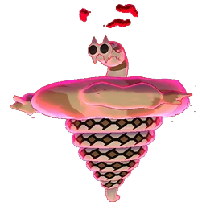

Quick summary
Species: Sandaconda (Gigantamax)
Type: Ground
Primary weaknesses: Water, Ice, Grass
Recommended lobby: 15-20 trainers
Gigantamax Sandaconda is a Ground-type Mega Raid Boss in Pokémon GO with massive bulk and devastating ground moves. Its unique Gigantamax form makes it a formidable opponent in raids, but it is vulnerable to Water, Ice, and Grass-type Pokémon.
This guide covers everything you need to defeat Gigantamax Sandaconda, including its weaknesses, best counters, movesets, catch CP ranges, weather boosts, shiny availability, and expert raid strategies for both beginners and advanced trainers.
Raid Boss: Gigantamax Sandaconda
Type: Ground
Raid Tier: Mega Raid
Major Weakness: Water, Ice, Grass

Gigantamax Sandaconda is the Gigantamax form of the Desert Snake Pokémon, Sandaconda, in Pokémon GO. Its Ground typing allows it to use heavy Earthquake and Sand Tomb attacks, making it dangerous against Electric- and Fire-type Pokémon.
However, trainers can exploit its weaknesses to Water, Ice, and Grass-type moves to defeat it efficiently. With the right counters and strategy, you can complete this raid even with a small group of high-level trainers.
This guide provides all the details you need to maximize your chances of success, including the best Pokémon to use, the most effective movesets, CP ranges, weather advantages, and tips for solo or group raids.
Sandaconda in Gigantamax form is presented here as a beefy Ground-type raid boss with boosted HP and slightly augmented damage output to mirror the rest of your Gigantamax series. Expect it to use high-power Ground-type charged moves (e.g., Earthquake, Sand Tomb variants) and occasional Rock or Poison coverage depending on event variants. Its big HP pool favors sustained, energy-efficient attackers; fights often reward consistent fast-move energy generation and high-value charged moves rather than glass-cannon bursts that get shielded away.
| Category | Details |
|---|---|
| Weak to |
 Water • Water •
 Ice • Ice •
 Grass Grass
|
| Resists |
 Poison • Poison •
 Rock • Rock •
 Fighting Fighting
|
| Notes | Gigantamax bosses often use Max Moves — these can be powerful, sometimes buffing or changing battlefield conditions. Expect higher HP and potentially team-wide effects. |
Pro tip: Using Water or Ice Pokémon maximizes damage against Gigantamax Sandaconda.
Gigantamax Rillaboom is Ground-type raid boss. It is weak to Water, Grass and Ice moves. During Max Battles, your goal is to maximize Water-type Gigantamax damage during the Max Phase.
| Pokémon | Fast Moves | Gigantamax Moves | Charged Moves | Elite Moves | Best Moves |
|---|---|---|---|---|---|
| Gigantamax Inteleon | Pound, Water Gun | G-Max Hydrosnipe | Shadow Ball, Water Pulse, Surf | - | Pound(6) and G-Max Hydrosnipe(350) |
|
|||||
| Gigantamax Kingler | Metal Claw, Bubble | G-Max Foam Burst | Vise Grip, X-Scissor, Water Pulse, Crabhammer, Razor Shell | Mud Shot | Bubble(10) and G-Max Foam Burst(350) |
|
|||||
| Gigantamax Blastoise | Bite, Water Gun, Rollout | G-Max Cannonade | Flash Cannon, Ice Beam, Hydro Pump, Skull Bash | Hydro Cannon | Rollout(15) and G-Max Cannonade(350) |
| Pokémon | Fast Moves | Gigantamax Moves | Charged Moves | Elite Moves | Best Moves |
|---|---|---|---|---|---|
| Gigantamax Rillaboom | Razor Leaf, Scratch | G-Max Drum Solo | Grass Knot, Energy Ball, Earth Power | - | Razor Leaf(13) and G-Max Drum Solo(350) |
|
|||||
| Gigantamax Appletun | Astonish, Bullet Seed | G-Max Sweetness | Seed Bomb, Dragon Pulse, Energy Ball, Outrage | Yawn | Astonish / Bullet Seed(7) and G-Max Sweetness(350) |
| Gigantamax Flapple | Dragon Breath, Bullet Seed | G-Max Tartness | Seed Bomb, Dragon Pulse, Outrage, Fly | - | Bullet Seed(7) and G-Max Tartness(350) |
| Gigantamax Lapras | Frost Breath, Water Gun, Psywave | G-Max Resonance | Blizzard, Hydro Pump, Surf, Skull Bash, Sparkling Aria | Ice Shard, Ice Beam, Dragon Pulse | Frost Breath(11) and G-Max Resonance(350) |
|
|||||
| Gigantamax Venusaur | Vine Whip, Razor Leaf | G-Max Vine Lash | Sludge, Petal Blizzard, Sludge Bomb, Solar Beam | Frenzy Plant | Razor Leaf(13) and G-Max Vine Lash(350) |
| Pokémon | Fast Moves | Gigantamax Moves | Charged Moves | Elite Moves | Best Moves |
|---|---|---|---|---|---|
| Gigantamax Drednaw | Bite, Waterfall | G-Max Stonesurge | Body Slam, Rock Blast, Crunch, Surf | - | Waterfall(13) and G-Max Stonesurge(350) |
| Gigantamax Gengar | Sucker Punch, Shadow Claw, Hex | G-Max Terror | Shadow Ball, Sludge Bomb, Focus Blast, Drain Punch | Lick, Dark Pulse, Shadow Punch, Sludge Wave, Psychic | Hex(8) and G-Max Terror(350) |
| Gigantamax Duraludon | Metal Claw, Dragon Tail | G-Max Depletion | Hyper Beam, Flash Cannon, Dragon Claw | - | Dragon Tail(14) and G-Max Depletion(350) |
| Gigantamax Cinderace | Tackle, Fire Spin | G-Max Fireball | Flamethrower, Flame Charge, Focus Blast | - | Fire Spin(13) and G-Max Fireball(350) |
| Gigantamax Hatterene | Psycho Cut, Confusion, Charm | G-Max Smite | Psyshock, Dazzling Gleam, Psychic, Power Whip | - | Charm(20) and G-Max Smite(350) |
| Gigantamax Machamp | Bullet Punch, Counter | G-Max Chi Strike | Cross Chop, Rock Slide, Close Combat, Dynamic Punch, Heavy Slam | Karate Chop, Stone Edge, Submission, Payback | Counter(13) and G-Max Chi Strike(350) |
| Pokémon | Dynamax Moves | Fast Moves | Charged Moves | Elite Moves | |
|---|---|---|---|---|---|
| Dynamax Inteleon | Max Geyser, Max Strike | Pound, Water Gun | Water Pulse, Surf, Shadow Ball | - | |
|
|||||
| Dynamax Urshifu | Max Geyser, Max Knuckle | Rock Smash, Counter, Waterfall | Brick Break, Dynamic Punch, Close Combat, Aqua Jet | - | |
| Dynamax Kingler | Max Geyser, Max Quake, Max Steelspike | Metal Claw, Bubble | Vise Grip, Water Pulse, X-Scissor, Crabhammer, Razor Shell | Mud Shot | |
|
|||||
| Dynamax Tsareena | Max Overgrowth, Max Starfall | Charm, Magical Leaf, Razor Leaf | Draining Kiss, Grass Knot, Stomp, Triple Axel, Energy Ball | High Jump Kick | |
| Dynamax Kabutops | Max Knuckle, Max Quake, Max Geyser, Max Flutterby | Rock Smash, Mud Shot, Waterfall | Ancient Power, Stone Edge, Water Pulse | Fury Cutter | |
| Dynamax Omastar | Max Quake, Max Geyser, Max Rockfall | Mud Shot, Water Gun | Ancient Power, Hydro Pump, Rock Blast | Rock Throw, Rock Slide | |
| Dynamax Drizzile | Max Strike, Max Geyser | Pound, Water Gun | Water Pulse, Surf | - | |
| Dynamax Krabby | Max Geyser, Max Quake | Bubble, Mud Shot | Bubble Beam, Vise Grip, Water Pulse, Razor Shell | - | |
| Dynamax Vaporean | Max Geyser | Water Gun | Hydro Pump, Aqua Tail, Liquidation, Water Pulse | Last Resort, Scald | |
| Pokémon | Fast Moves | Gigantamax Moves | Charged Moves | Elite Moves | Best Moves |
|---|---|---|---|---|---|
| Dynamax Rillaboom | Max Overgrowth, Max Strike | Scratch, Razor Leaf | Energy Ball, Grass Knot, Earth Power | - | |
|
|||||
| Dynamax Venusaur | Max Overgrowth | Razor Leaf, Vine Whip | Petal Blizzard, Sludge Bomb, Solar Beam, Sludge | Frenzy Plant | |
| Dynamax Gardevoir | Max Mindstorm, Max Starfall, Max Lightning, Max Overgrowth | Confusion, Charge Beam, Charm, Magical Leaf | Psychic, Dazzling Gleam, Shadow Ball, Triple Axel | Synchronoise | |
| Dynamax Articuno | Max HailStorm | Frost Breath, Ice Shard | Blizzard, Ice Beam, Icy Wind, Ancient Power, Triple Axel | Hurricane | |
|
|||||
| Dynamax Cryogonal | Max Hailstorm | Ice Shard, Frost Breath | Aurora Beam, Night Slash, Solar Beam, Water Pulse, Triple Axel | - | |
|
|||||
| Dynamax Leafeon | Max Overgrowth | Quick Attack, Razor Leaf | Solar Beam, Leaf Blade, Energy Ball | Bullet Seed, Last Resort | |
| Dynamax Glaceon | Max Hailstorm | Ice Shard, Frost Breath | Avalanche, Icy Wind, Ice Beam | Last Resort, Water Pulse | |
| Pokémon | Fast Moves | Gigantamax Moves | Charged Moves | Elite Moves | Best Moves |
|---|---|---|---|---|---|
| Eternatus | Dynamax Cannon | Dragon Tail, Poison Jab | Sludge Bomb, Dragon Pulse, Flamethrower | - | |
| Zacian | Behemoth Blade | Metal Claw, Air Slash | Play Rough, Giga Impact, Close Combat | - |
Sandaconda common fast moves are Mud Shot or Mud Slap. Charged moves include Wrap or Dig or Bulldoze and Earth Power. G-Max Sandblast not only delivers heavy damage but also leaves a damaging area for a short time — timing your swaps and using at least one bulky support reduces wipe risk.
Pro tip: Watch for Earth Power timing—dodging can save your Pokémon from heavy damage.
Snowy weather : boosts Ice moves. Windy weather : boosts Dragon Tail. Rainy weather : boosts Water moves. Sunny / Clear weather : boosts Sandaconda Ground moves.
Recommended: 15–20 trainers for comfortable clears with mixed player levels. With many Gigantamax / Dynamax counters, 10–14 can work. Under 8 trainers should be attempted only if all participants are high-level and coordinated with ideal counters and Dynamax/G-Max boosts.
Reasons include Pokédex entry, strong Ground attacker, shiny chance, and XL Candy farming.
Yes! After defeating Gigantamax Sandaconda in a raid, players have the chance to encounter a Shiny Sandaconda. Shiny Sandaconda has a slightly darker, greenish color compared to the regular version, making it highly desirable for collectors.
While the Gigantamax form itself cannot be caught, the standard Sandaconda encountered after the raid may appear as shiny. Participating in multiple raids increases your chance to find a shiny variant.
Sandaconda is a Ground type. It is weak to Water, Ice, Grass.
Gigantamax Sandaconda uses the special move G-Max Sandblast. This Ground-type attack deals massive damage and continuously damages opponents over multiple turns.
Yes, but in certain events.
Yes — standard raid catch mechanics apply.
It has high HP and decent defense. Using Water or Grass-type counters allows players to defeat it efficiently.
No — it’s exclusive to Gigantamax raids.
Gigantamax Sandaconda’s massive coiled body dominates the battlefield, allowing it to crush opponents and create a visually impressive Max Raid Battle experience.
Gigantamax Sandaconda is a mechanically interesting raid boss: its Ground type is predictable, but the G-Max residual damage forces teams to plan for survivability, not just pure DPS. Prioritize Ice and Grass Gigantamax picks, add Dynamax support for sustained windows, and include at least one high-TDO tank if your lobby is smaller. With the counters and tactics above, you’ll clear Sandaconda efficiently and maximize your rewards.